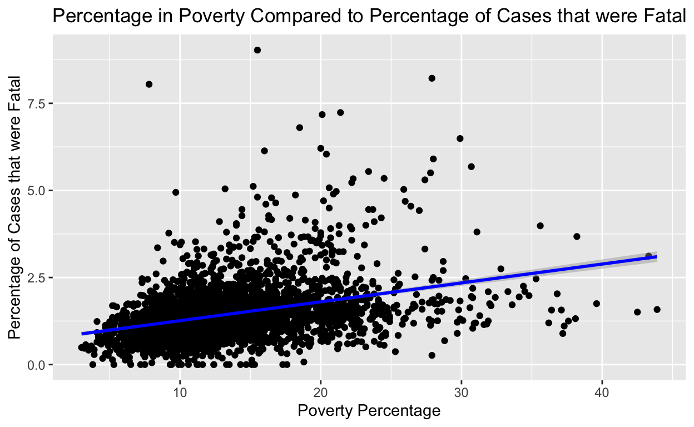

COVID-19 Mortality Rates as a Result of the Limitations of Poverty
This study seeks to explore data pertaining to COVID-19 infection and death on the basis of socioeconomic class in the United States. The question which this study seeks to answer through this research is what the impact of poverty levels are on the incidence and mortality rates of COVID-19.
My hypothesis is that areas with higher poverty will experience higher case counts and mortality rates due to a lack of access to high-quality healthcare, decreased ability to take time off work due to the need for money, decreased ability to work remotely and avoid exposure to the illness, and lower rates of insurance. The explanatory variable will be poverty rates by county in the US. The outcome variable will mortality rates due to COVID, which will be found by dividing deaths due to COVID by incidences of COVID in each county. If the incidence rate and death rate are higher in counties with higher poverty, then this would support our hypothesis. If the rates are the same, however, this would disprove our hypothesis and indicate equivalent access to care among poor and wealthy Americans.
count_deaths <- fin_cases |>
inner_join(fin_deaths, by = "countyFIPS") |>
mutate(County_Name = County.Name.x) |>
select(countyFIPS, County_Name, final_count, final_deaths)poverty <- poverty |>
mutate(X = as.numeric(X))count_deaths <- count_deaths |>
mutate(countyFIPS = as.numeric(countyFIPS))poverty$X[poverty$X.1 == "AL"] <- (poverty$X[poverty$X.1 == "AL"] + 1000)
poverty$X[poverty$X.1 == "AK"] <- (poverty$X[poverty$X.1 == "AK"] + 2000)
poverty$X[poverty$X.1 == "AZ"] <- (poverty$X[poverty$X.1 == "AZ"] + 4000)
poverty$X[poverty$X.1 == "AR"] <- (poverty$X[poverty$X.1 == "AR"] + 5000)
poverty$X[poverty$X.1 == "CA"] <- (poverty$X[poverty$X.1 == "CA"] + 6000)
poverty$X[poverty$X.1 == "CO"] <- (poverty$X[poverty$X.1 == "CO"] + 8000)
poverty$X[poverty$X.1 == "CT"] <- (poverty$X[poverty$X.1 == "CT"] + 9000)
poverty$X[poverty$X.1 == "DE"] <- (poverty$X[poverty$X.1 == "DE"] + 10000)
poverty$X[poverty$X.1 == "DC"] <- (poverty$X[poverty$X.1 == "DC"] + 11000)
poverty$X[poverty$X.1 == "FL"] <- (poverty$X[poverty$X.1 == "FL"] + 12000)
poverty$X[poverty$X.1 == "GA"] <- (poverty$X[poverty$X.1 == "GA"] + 13000)
poverty$X[poverty$X.1 == "HI"] <- (poverty$X[poverty$X.1 == "HI"] + 15000)
poverty$X[poverty$X.1 == "ID"] <- (poverty$X[poverty$X.1 == "ID"] + 16000)
poverty$X[poverty$X.1 == "IL"] <- (poverty$X[poverty$X.1 == "IL"] + 17000)
poverty$X[poverty$X.1 == "IN"] <- (poverty$X[poverty$X.1 == "IN"] + 18000)
poverty$X[poverty$X.1 == "IA"] <- (poverty$X[poverty$X.1 == "IA"] + 19000)
poverty$X[poverty$X.1 == "KS"] <- (poverty$X[poverty$X.1 == "KS"] + 20000)
poverty$X[poverty$X.1 == "KY"] <- (poverty$X[poverty$X.1 == "KY"] + 21000)
poverty$X[poverty$X.1 == "LA"] <- (poverty$X[poverty$X.1 == "LA"] + 22000)
poverty$X[poverty$X.1 == "ME"] <- (poverty$X[poverty$X.1 == "ME"] + 23000)
poverty$X[poverty$X.1 == "MD"] <- (poverty$X[poverty$X.1 == "MD"] + 24000)
poverty$X[poverty$X.1 == "MA"] <- (poverty$X[poverty$X.1 == "MA"] + 25000)
poverty$X[poverty$X.1 == "MI"] <- (poverty$X[poverty$X.1 == "MI"] + 26000)
poverty$X[poverty$X.1 == "MN"] <- (poverty$X[poverty$X.1 == "MN"] + 27000)
poverty$X[poverty$X.1 == "MS"] <- (poverty$X[poverty$X.1 == "MS"] + 28000)
poverty$X[poverty$X.1 == "MO"] <- (poverty$X[poverty$X.1 == "MO"] + 29000)
poverty$X[poverty$X.1 == "MT"] <- (poverty$X[poverty$X.1 == "MT"] + 30000)
poverty$X[poverty$X.1 == "NE"] <- (poverty$X[poverty$X.1 == "NE"] + 31000)
poverty$X[poverty$X.1 == "NV"] <- (poverty$X[poverty$X.1 == "NV"] + 32000)
poverty$X[poverty$X.1 == "NH"] <- (poverty$X[poverty$X.1 == "NH"] + 33000)
poverty$X[poverty$X.1 == "NJ"] <- (poverty$X[poverty$X.1 == "NJ"] + 34000)
poverty$X[poverty$X.1 == "NY"] <- (poverty$X[poverty$X.1 == "NY"] + 36000)
poverty$X[poverty$X.1 == "NC"] <- (poverty$X[poverty$X.1 == "NC"] + 37000)
poverty$X[poverty$X.1 == "ND"] <- (poverty$X[poverty$X.1 == "ND"] + 38000)
poverty$X[poverty$X.1 == "OH"] <- (poverty$X[poverty$X.1 == "OH"] + 39000)
poverty$X[poverty$X.1 == "OK"] <- (poverty$X[poverty$X.1 == "OK"] + 40000)
poverty$X[poverty$X.1 == "OR"] <- (poverty$X[poverty$X.1 == "OR"] + 41000)
poverty$X[poverty$X.1 == "PA"] <- (poverty$X[poverty$X.1 == "PA"] + 42000)
poverty$X[poverty$X.1 == "RI"] <- (poverty$X[poverty$X.1 == "RI"] + 44000)
poverty$X[poverty$X.1 == "SC"] <- (poverty$X[poverty$X.1 == "SC"] + 45000)
poverty$X[poverty$X.1 == "SD"] <- (poverty$X[poverty$X.1 == "SD"] + 46000)
poverty$X[poverty$X.1 == "TN"] <- (poverty$X[poverty$X.1 == "TN"] + 47000)
poverty$X[poverty$X.1 == "TX"] <- (poverty$X[poverty$X.1 == "TX"] + 48000)
poverty$X[poverty$X.1 == "UT"] <- (poverty$X[poverty$X.1 == "UT"] + 49000)
poverty$X[poverty$X.1 == "VT"] <- (poverty$X[poverty$X.1 == "VT"] + 50000)
poverty$X[poverty$X.1 == "VA"] <- (poverty$X[poverty$X.1 == "VA"] + 51000)
poverty$X[poverty$X.1 == "WA"] <- (poverty$X[poverty$X.1 == "WA"] + 53000)
poverty$X[poverty$X.1 == "WV"] <- (poverty$X[poverty$X.1 == "WV"] + 54000)
poverty$X[poverty$X.1 == "WI"] <- (poverty$X[poverty$X.1 == "WI"] + 55000)
poverty$X[poverty$X.1 == "WY"] <- (poverty$X[poverty$X.1 == "WY"] + 56000) poverty <- poverty |>
mutate(countyFIPS = X)poverty <- poverty |>
subset(countyFIPS!=0)count_deaths <- count_deaths |>
subset(countyFIPS != 0)dataset <- poverty |>
inner_join(count_deaths)dataset <- dataset |>
mutate(Poverty_Count = X.3, Poverty_Perc = as.numeric(X.6)) |>
select(countyFIPS, County_Name, final_count, final_deaths, Poverty_Count, Poverty_Perc)The population data was assembled outside of this markdown file as the dataset was well over 100 MB and needed to be further cleaned prior to its upload to github. Details of how this was done can be seen below:
data <- read.csv("cc-est2019-alldata.csv")write.csv(data2, "C:\\Users\\chaseyager\\Classes\\GOV50\\final_project\\gov50-final\\data_clean\\pop.csv")pop <- read.csv("data/pop.csv")dataset <- dataset |>
inner_join(pop, by = "countyFIPS") |>
select(countyFIPS, County_Name, final_count, final_deaths, Poverty_Count, Poverty_Perc, TOT_POP, NWhite, perc_n_white)Sources of the data can be found at the bottom of the page. For poverty and race data all information came from the US Census. For COVID infections and death, data was taken from USA Facts which collects government data and in this case collected all information directly from each states reports.
The research method used most closely resembles a cross-sectional approach, where the treatment is the rates of poverty, and the outcome is the rate of incidence and the mortality rates of COVID-19 in the different groups. This study would fall under this category because of the way in which the data was measured. The results of this study are based on a snapshot of the outcomes and characteristics at a certain time, meaning there is not a before and an after or a time dimension of our study. The date from which the data was collected is October 14th, 2022, for both cases and deaths, as this is the latest date in the dataset and provides a running total of the cases and deaths for the entirety of the pandemic. Additionally, information on the racial breakdown of counties taken in July of 2019 were used as a potential confounding variable to see if minority groups were additionally disproportionately impacted by the disease. This study seeks to determine if there are preexisting differences in infection and mortality for COVID-19 that can be attributed to preexisting differences in the populations.
The dependent variable for the study is the mortality rate of COVID-19, which was calculated by dividing the total number of deaths on the aforementioned date due to the disease by the total number of cases at that same time. The reason this variable was used rather than the absolute number of cases or deaths is illustrated by the following graphs:
pov_count_graph <- dataset |>
ggplot(mapping = aes (x = Poverty_Perc, y = final_count)) +
geom_point() +
geom_smooth(method = "lm", color = "blue") +
scale_y_log10() +
labs(x = "Percent in Poverty by County", y = "Number of Confirmed Cases", title = "Comparison Between Poverty Rate and COVID Cases by County")
pov_count_graphpov_death_graph <- dataset |>
ggplot(mapping = aes (x = Poverty_Perc, y = final_deaths)) +
geom_point() +
geom_smooth(method = "lm", color = "blue") +
scale_y_log10() +
labs(x = "Percent in Poverty by County", y = "Number of Confirmed Deaths", title = "Comparison Between Poverty Rate and COVID Deaths by County")
pov_death_graphAs can be seen, there is a slight negative correlation between poverty rates and the absolute level of cases and deaths which would appear to go against the hypothesis. But this relationship is vulnerable to differences in population size within counties that may alter the results. If poorer groups, often in more rural settings, have smaller populations, then the absolute number of cases will similarly be smaller. It is for this reason that mortality rates were used, as this provides an average for the severity of the cases, regardless of population size. The dependent variable is summarized in the following graph:
dataset <- dataset |>
mutate(per_fatal = 100*(final_deaths/final_count),
perc_n_white = 100*(perc_n_white))dataset |>
ggplot(mapping = aes(y = per_fatal)) +
geom_boxplot() +
labs(title = "Distribution of Mortality Rates (deaths/cases)", y = "Deaths/Cases")The results of this study can be seen below represented in two separate graphs. The first graph is a a presentation of our regression results comparing our independent variable, which was the percentage of people in poverty by county in the US, and our dependent variable, which is the mortality rates by county.
perc_comp_fig <- dataset |>
ggplot(mapping = aes(x = Poverty_Perc, y = per_fatal)) +
geom_point() +
geom_smooth(method = "lm", color = "blue") +
labs(title = "Percentage in Poverty Compared to Percentage of Cases that were Fatal", x = "Poverty Percentage", y = "Percentage of Cases that were Fatal")
perc_comp_fig
fit3 <- lm(per_fatal ~ Poverty_Perc, data = dataset)
fit3 |>
broom::tidy() |>
select(term, estimate) |>
knitr::kable(col.names = c("Term", "Slope Estimate"))| Term | Slope Estimate |
|---|---|
| (Intercept) | 0.7194977 |
| Poverty_Perc | 0.0541590 |
It is clear from the linear regression superimposed on the graph that there is a positive correlation between poverty percentage and the percentage of cases that were fatal. The fit run on the same data demonstrates an intercept of .719 and a slope of .054. This indicates that the estimated mortality rates when poverty is 0 would be .719%, and that for every 1% increase in poverty percentage in a county, we would see a .054% increase in the percentage of cases that were fatal. This would appear to confirm our hypothesis, however it is important to consider confounding variable that may influence the results.
For instance, it is possible that differential access to healthcare may be based more on racial divides than poverty divides. It is for this reason that race data was also looked at as a possible descriptor of our results.
dataset |>
ggplot(mapping = aes(x = perc_n_white, y = per_fatal)) +
geom_point() +
geom_smooth(method = "lm", color = "blue") +
labs(title = "Percentage Non-White Population Compared to Percentage of Fatal Cases", x = "Percentage Non-White",
y = "Percentage of Cases that were Fatal")fit2 <- lm(per_fatal ~ perc_n_white, data = dataset)
fit2 |>
broom::tidy() |>
select(term, estimate) |>
knitr::kable(col.names = c("Term", "Estimated Slope"))| Term | Estimated Slope |
|---|---|
| (Intercept) | 1.3745916 |
| perc_n_white | 0.0055188 |
Much like the previous results from our main relationship of interest, this graph demonstrates a positive relationship between the percentage of a counties population which is non-white, and the percentage of COVID-19 cases which were fatal. The fit run on this data gives an intercept of 1.37 and a slope of .006. This means that the expected percentage of fatal cases when a population is entirely white is 1.37%, and that for every 1% increase in the percentage of the population which is non-white, we expect to see a .006% increase in the percentage of cases which were fatal.
But to better understand which of the two variables, race or poverty, played a role in determining the fatality COVID-19 cases, a regression needed to be run which accounted for both variables. For this the following multiple regression was run:
fit <- lm(per_fatal ~ Poverty_Perc + perc_n_white, data = dataset)
fit |>
broom::tidy() |>
select(term, estimate) |>
knitr::kable(col.names = c("Term", "Estimated Slope"))| Term | Estimated Slope |
|---|---|
| (Intercept) | 0.6908783 |
| Poverty_Perc | 0.0619819 |
| perc_n_white | -0.0050238 |
| term | estimate | std.error | statistic | p.value |
|---|---|---|---|---|
| (Intercept) | 0.6908783 | 0.0376444 | 18.35274 | 0e+00 |
| Poverty_Perc | 0.0619819 | 0.0029510 | 21.00368 | 0e+00 |
| perc_n_white | -0.0050238 | 0.0009753 | -5.15097 | 3e-07 |
The above table demonstrates the results of out multiple regression using both poverty percentage and the non-white percentage of a county as they pertain to the percentage of COVID cases which were fatal. As can be seen when holding race constant, the estimated impact of poverty percentage was 0.062, which indicates that for a 1% increase in poverty, we would expect to see a .062% increase in COVID-19 fatality rates. This result is highly significant, as the p value was 0. This indicates that it is extremely unlikely that these results would occur randomly, meaning poverty percentage does have a direct relationship with fatalities to COVID. Similarly, the p-value for the percentage of the population that was nonwhite, while bigger, is still effectively zero, indicating it too has an impact on the mortality rates of COVID cases, however the slope when holding poverty percentage constant actually indicates an inverse relationship between percentage non-white and COVID fatalities. This means that, if poverty rates are constant, a 1% increase in non-white population would lead to an expected decrease of .005% in mortality rates. What this data goes to show, when compared to the regression run solely between the percentage of non-white population and mortality rates, is that the likely cause of higher rates of mortality among minority dominant populations is the result of higher poverty rates in those populations, rather than difference in race itself. This is to say that poverty is a confounding variable in the relationship between race and COVID mortality. This does not come as a surprise, but does speak to the socioeconomic differences between racial groups in the US.
There are confounding variables which should be considered that may contribute to both poverty and COVID deaths, with the most obvious being the presence of preexisting medical conditions that both prevent someone from working and decrease the strength of their immune system; however, rates of these instances are likely too small to account for the strength of the relationship between poverty and COVID mortality. Further, access to medical care could be lower in rural settings, and poverty rates could be higher there contributing to both poverty and mortality, however rural and urban centers were not weighted any differently in the study, as the study was done by county. There are considerably more rural counties than urban counties in the study as most of the US landmass is rural, meaning urban counties would have less impact on the average result as they would be balanced out by the larger number of rural counties. As such, this variable likely would not have a strong enough impact on our results to compromise the study. Given higher poverty rates likely contribute to lower rates of insurance, less access to quality medical care, and an inability to take time away from work, which would in turn contribute to higher rates of infection and lower rates of treatment for COVID-19, I believe these results indicate a causal relationship between COVID mortality rates and poverty.
To recap, the results of our study, accounting for racial differences in counties, demonstrated an estimated relationship of .062 between poverty and COVID mortality. This means that with a 1% increase in poverty, we expect to see a .062% increase in COVID mortality rates. Further, this result was highly significant, with a p value of zero, indicating it is highly unlikely that these results would have occurred in a random sample.
Despite the strength of the results, there are still some limitations to the study. While the external validity of the study was strong as it used the entire US as a sample group, the internal validity is harder to verify as there could be a number of other variables which may have impacted our results as the treatment and control groups could have differed in other ways that were not recorded in the data. In the future it would improve the study to control for preexisting conditions that may contribute to both poverty and mortality, and to control for the population density of counties which may have contributed to the rates of COVID exposure.
Poverty Data: US Census
Infection and Death Rates: USA Facts
Population Race Data: US Census